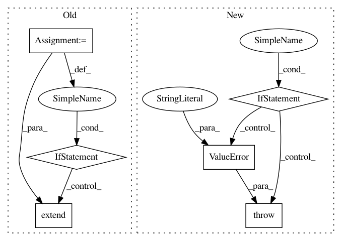

c683f4b1b06a2108249820888516b333313e0569,python/src/nnabla/utils/converter/onnx/importer.py,OnnxImporter,Reshape,#OnnxImporter#Any#Any#,834
Before Change
// so we convert the shape input to a parameter
shape_input = func.input[1]
// look for the initializer for matching input
for init in self._graph.initializer:
if init.name == shape_input:
if init.data_type != TensorProto.INT64:
raise ValueError(
"Only INT64 is supported for shape in {} op_type".format(n.op_type))
// copy shape size from initializer
if init.raw_data:
rp.shape.dim.extend(np.fromstring(
init.raw_data, dtype=np.int64))
elif init.int64_data:
rp.shape.dim.extend(init.int64_data)
shape_found = True
break
// stored the merged input so we can ignore it later
self._merged_inputs.append(shape_input)
del func.input[1]
if not shape_found:
raise ValueError(
After Change
// so we convert the shape input to a parameter
shape_input = func.input[1]
raw_data = self.get_input_raw_data(shape_input)
if raw_data:
rp.shape.dim.extend(raw_data)
shape_found = True
else:
raise ValueError("Not found shape")
// stored the merged input so we can ignore it later
self._merged_inputs.append(shape_input)
del func.input[1]
if not shape_found:
raise ValueError(
In pattern: SUPERPATTERN
Frequency: 3
Non-data size: 6
Instances
Project Name: sony/nnabla
Commit Name: c683f4b1b06a2108249820888516b333313e0569
Time: 2019-08-07
Author: Yuchi.Wen@sony.com
File Name: python/src/nnabla/utils/converter/onnx/importer.py
Class Name: OnnxImporter
Method Name: Reshape
Project Name: sony/nnabla
Commit Name: c683f4b1b06a2108249820888516b333313e0569
Time: 2019-08-07
Author: Yuchi.Wen@sony.com
File Name: python/src/nnabla/utils/converter/onnx/importer.py
Class Name: OnnxImporter
Method Name: Tile
Project Name: tensorflow/benchmarks
Commit Name: ecec43ee2dd7d21a08d68d00c668ea54bde03672
Time: 2018-10-08
Author: reedwm@google.com
File Name: scripts/tf_cnn_benchmarks/benchmark_cnn.py
Class Name: BenchmarkCNN
Method Name: _run_eval